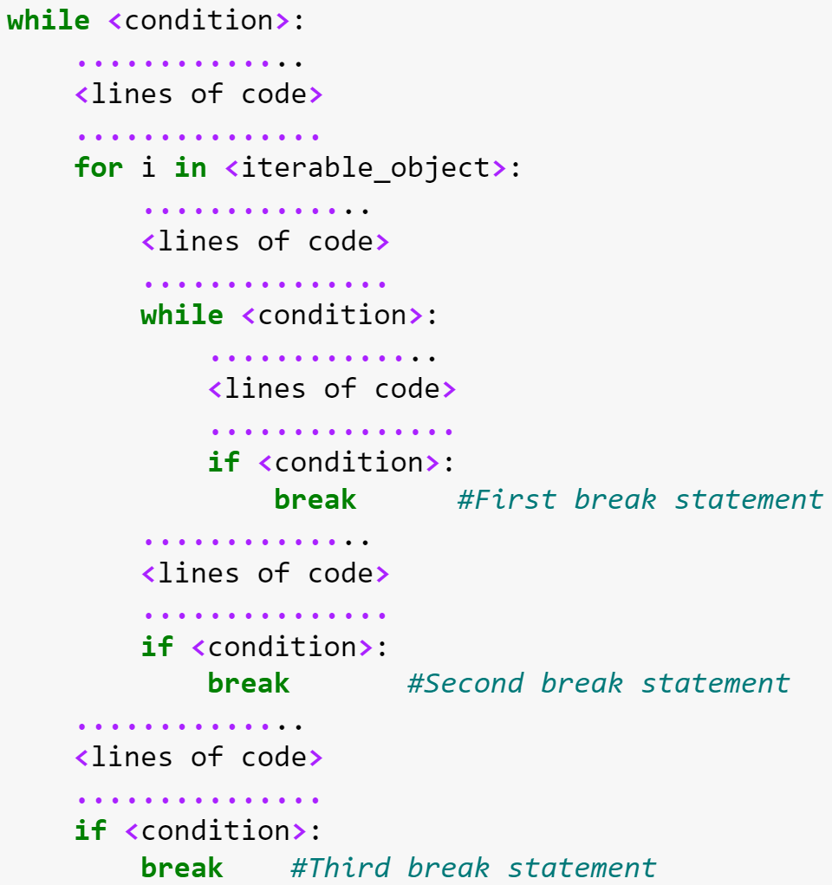

3 Control flow tools
A control flow statement in a computer program determines the individual lines of code to be executed and/or the order in which they will be executed. In this chapter, we’ll learn about 3 types of control flow statements:
- if-elif-else
- for and while loops
- break, continue, and pass statements
3.1 Indentation in Python
Syntax: Python uses indentation to identify the code to be executed if a condition is true. All the code indented within a condition is executed if the condition is true.
3.1.1 What is Indentation?
- Indentation refers to the spaces or tabs at the beginning of a line of code.
- In Python, indentation is mandatory and is used to define the structure of the code, such as blocks in loops, conditionals, functions, and classes.
- Unlike some other programming languages, Python does not use braces
{}or keywords likebeginandendto define blocks of code.
3.1.2 Rules for Indentation
- Consistency is Key:
- Use either spaces or tabs for indentation, but do not mix them in the same file.
- The recommended standard is to use 4 spaces per indentation level (PEP 8).
- Indentation Levels:
- Each block of code under a statement (e.g.,
if,for,while,def) must be indented one level deeper than the statement itself.
- Each block of code under a statement (e.g.,

3.1.3 Examples
# Example of proper indentation
def greet(name):
if name:
print(f"Hello, {name}!")
else:
print("Hello, World!")3.2 Conditonal execution
The first type of control flow satement is if-elif-else. This statement helps with conditional execution of code, i.e., the piece of code to be executed is selected based on certain condition statements(s).

3.2.1 Comparison operators
For testing if conditions are true or false, first we need to learn the operators that can be used for comparison. For example, suppose we want to check if two objects are equal, we use the == operator:
5 == 6FalseMake sure you can differentiate between the == and = operators: - ==: This is a comparison operator, used to compare two values and return a Boolean result (True or False). - =: This is an assignment operator, used to assign values to variables.
x = "hi"
y = "hi"
x == yTrueBelow are the python comparison operators and their meanings.
| Python code | Meaning |
|---|---|
| x == y | Produce True if … x is equal to y |
| x != y | … x is not equal to y |
| x > y | … x is greater than y |
| x < y | … x is less than y |
| x >= y | … x is greater than or equal to y |
| x <= y | … x is less than or equal to y |
3.2.2 Logical Operators in Conditional Statements
Logical operators are used to combine multiple conditions in a conditional statement, allowing for more complex decision-making. Python provides three logical operators:
3.2.2.1 and
- Description: Returns
Trueif both conditions areTrue. - Example:
x = 5
if x > 0 and x < 10:
print("x is a positive single-digit number.")x is a positive single-digit number.3.2.2.2 or
- Description: Returns
Trueif at least one condition isTrue. - Example:
x = -5
if x < 0 or x > 10:
print("x is either negative or greater than 10.")x is either negative or greater than 10.3.2.2.3 not
- Description: Returns the negation of a condition (
TruebecomesFalseand vice versa). - Example:
x = 5
if not (x < 0):
print("x is not negative.")x is not negative.3.2.3 if-elif-else statement
The if-elif-else statements can check several conditions, and execute the code corresponding to the condition that is true. Note that there can be as many elif statements as required.
Syntax: Python uses indentation to identify the code to be executed if a condition is true. All the code indented within a condition is executed if the condition is true.
Example: Input an integer. Print whether it is positive or negative.
number = input("Enter a number:") #Input an integer
number_integer = int(number) #Convert the integer to 'int' datatype
if number_integer > 0: #Check if the integer is positive
print("Number is positive")
else:
print("Number is negative")Number is positiveIn the above code, note that anything entered by the user is taken as a string datatype by python. However, a string cannot be positive or negative. So, we converted the number input by the user to integer to check if it was positive or negative.
There may be multiple statements to be executed if a condition is true. See the example below.
Example: Input a number. Print whether it is positive, negative or zero. If it is negative, print its absolute value.
number = input("Enter a number:")
number_integer = int(number)
if number_integer > 0:
print("Number is positive")
elif number_integer == 0:
print("Number is zero")
else:
print("Number is negative")
print("Absolute value of number = ", abs(number_integer))Number is positive3.2.4 Practice exercise 1
Input a number. Print whether its odd or even.
Solution:
num = int(input("Enter a number: "))
if num%2 == 0: #Checking if the number is divisible by 2
print("Number is even")
else:
print("Number is odd")Number is odd3.2.5 Practice exercise 2
3.2.5.1
Ask the user to enter their exam score. Print the grade based on their score as follows:
| Score | Grade |
|---|---|
| (90,100] | A |
| (80,90] | B |
| [0,80] | C |
If the user inputs a score which is not a number in [0,100], print invalid entry.
Solution:
score = input("Enter exam score:")
try:
#As exam score can be a floating point number (such as 90.65), we need to use 'float' instead of 'int' to convert the user input to a floating point number
score_num = float(score)
if score_num > 90 and score_num <= 100:
print("Grade: A")
elif score_num > 80 and score_num <= 90:
print("Grade: B")
elif score_num >= 0 and score_num <= 80:
print("Grade: C")
else:
print("Invalid score") #If a number is less than 0 or more than 100
except:
print("Invalid input") #If the input is not a numberGrade: C3.2.5.2
Nested if-elif-else statements: This question will lead you to create nested if statements, i.e., an if statement within another if statement.
Think of a number in [1,5]. Ask the user to guess the number.
- If the user guesses the number correctly, print “Correct in the first attempt!”, and stop the program. Otherwise, print “Incorrect! Try again” and give them another chance to guess the number.
- If the user guesses the number correctly in the second attempt, print “Correct in the second attempt”, otherwise print “Incorrect in both the attempts, the correct number is:”, and print the correct number.
Solution:
#Let us say we think of the number. Now the user has to guess the number in two attempts.
rand_no = 3
guess = input("Guess the number:")
if int(guess)==rand_no:
print("Correct in the first attempt!")
#If the guess is incorrect, the program will execute the code block below
else:
guess = input("Incorrect! Try again:")
if int(guess) == rand_no:
print("Correct in the second attempt")
else:
print("Incorrect in the both the attempts, the correct number was:", rand_no)Incorrect in the both the attempts, the correct number was: 33.3 Loops in Python
Python provides two types of loops: for and while loops. Loops are used to execute a block of code repeatedly until a certain condition is met.
3.3.1 Using range() in for Loops
The range() function is commonly used with loops in Python to generate a sequence of numbers. It is particularly useful with for loops.
3.3.1.1 Syntax of range()
range(start, stop, step)
start: (Optional) The starting value of the sequence (default is0).stop: (Required) The endpoint of the sequence (exclusive).step: (Optional) The difference between each number in the sequence (default is1).
Using the range() function, the for loop can iterate over a sequence of numbers. See the examples below.
for i in range(5):
print(i)0
1
2
3
4Note that the last element is one less than the integer specified in the range() function.
# specify start and stop
for i in range(5, 10):
print(i)5
6
7
8
9# use step
for i in range(0, 10, 2):
print(i)0
2
4
6
8# A negative step will count down
for i in range(10, 0, -2):
print(i)10
8
6
4
2# if start is greater than steop, the range will generate an empty sequence
for i in range(10, 0):
print(i)Example: Print the first n elements of the Fibonacci sequence, where n is an integer input by the user, such that n>2. In a fibonacci sequence, each number is the sum of the preceding two numbers, and the sequence starts from 0,1. The sequence is as follows:
0,1,1,2,3,5,8,13,….
n = int(input("Enter number of elements:"))
#Initializing the sequence to start from 0, 1
n1, n2 = 0, 1
#Printing the first two numbers of the sequence
print(n1)
print(n2)
for i in range(n-2): #Since two numbers of the sequence are already printed, n-2 numbers are required
#Computing the next number of the sequence as the summation of the previous two numbers
n3 = n1 + n2
print(n3)
#As 'n3' is already printed, it is no longer the next number of the sequence.
#Thus, we move the values of the variables n1 and n2 one place to the right to compute the next number of the sequence.
n1 = n2
n2 = n3
print("These are the first", n, "elements of the fibonacci series")0
1
1
2
3
5
8
13
21
34
55
89
144
233
377
610
987
1597
2584
4181
6765
10946
17711
28657
46368
75025
121393
196418
317811
514229
832040
1346269
2178309
3524578
5702887
9227465
14930352
24157817
39088169
63245986
102334155
165580141
267914296
433494437
701408733
1134903170
1836311903
2971215073
4807526976
7778742049
12586269025
20365011074
32951280099
53316291173
86267571272
139583862445
225851433717
365435296162
591286729879
956722026041
1548008755920
2504730781961
4052739537881
6557470319842
10610209857723
17167680177565
27777890035288
44945570212853
72723460248141
117669030460994
190392490709135
308061521170129
498454011879264
806515533049393
1304969544928657
2111485077978050
3416454622906707
5527939700884757
These are the first 78 elements of the fibonacci seriesAs in the if-elif-else statement, the for loop uses identation to indicate the piece of code to be run repeatedly.
# nested with range
for i in range(5):
for j in range(5):
print(i, j)0 0
0 1
0 2
0 3
0 4
1 0
1 1
1 2
1 3
1 4
2 0
2 1
2 2
2 3
2 4
3 0
3 1
3 2
3 3
3 4
4 0
4 1
4 2
4 3
4 43.3.2 while loop
With a while loops, a piece of code is executed repeatedly until certain condition(s) hold.
Example: Print all the elements of the Fibonacci sequence less than n, where n is an integer input by the user, such that n>2. In a fibonacci sequence, each number is the sum of the preceding two numbers, and the sequence starts from 0,1. The sequence is as follows:
0,1,1,2,3,5,8,13,….
# Get user input for the Fibonacci sequence limit
n = int(input("Enter the value of n: "))
# Initializing the sequence to start from 0 and 1
n1, n2 = 0, 1
# Print the first number of the sequence
print(n1)
# Generate Fibonacci numbers less than n
while n2 < n:
print(n2) # Print the next number in the sequence
# Compute the next number in the sequence as the sum of the previous two numbers
n3 = n1 + n2
# Update values: shift n1 to n2, and n2 to the newly computed value n3
n1, n2 = n2, n3
# Print completion message
print(f"These are all the elements of the Fibonacci series less than {n}.")0
1
1
2
3
5
8
13
21
These are all the elements of the fibonacci series less than 23Let’s take it a step further: if the user enters an invalid input, the Python program will repeatedly prompt them until they provide a valid one, using a while loop
# Prompt the user for a valid positive integer
while True:
user_input = input("Enter a positive integer (n): ")
if user_input.isdigit(): # Check if input is numeric
n = int(user_input)
if n > 0: # Ensure the number is positive
break # Exit the loop if input is valid
else:
print("Error: Please enter a number greater than 0.")
else:
print("Error: Invalid input. Please enter a positive integer.")
# Initializing the sequence to start from 0 and 1
n1, n2 = 0, 1
# Print the first number of the sequence
print(n1)
# Generate Fibonacci numbers less than n
while n2 < n:
print(n2) # Print the next number in the sequence
# Compute the next number in the sequence as the sum of the previous two numbers
n3 = n1 + n2
# Update values: shift n1 to n2, and n2 to the newly computed value n3
n1, n2 = n2, n3
# Print completion message
print(f"These are all the elements of the Fibonacci series less than {n}.")Ensures valid input using a while loop:
- Keeps prompting the user until they enter a positive integer.
- Uses
.isdigit()to check if input is numeric. - Converts input to
intand ensures it’s greater than 0.
3.3.3 Practice exercise 3
3.3.3.1
Write a program that identifies whether a number input by the user is prime or not.
Solution:
number = int(input("Enter a positive integer:"))
#Defining a variable that will have a value of 0 if there are no divisors
num_divisors = 0
#Checking if the number has any divisors from 2 to half of the number
for divisor in range(2,int(number/2+1)):
if number % divisor == 0:
#If the number has a divisor, setting num_divisors to 1, to indicate that the number is not prime
num_divisors = 1
#If a divisor has been found, there is no need to check if the number has more divisors.
#Even if the number has a single divisor, it is not prime. Thus, we 'break' out of the loop that checks for divisors
#If you don't 'break', your code will still be correct, it will just do some unnecessary computations
break
#If there are no divisors of the number, it is prime, else not prime
if num_divisors == 0:
print("Prime")
else:
print("Not prime")Not prime3.3.3.2
Update the program above to print the prime numbers starting from 2, and less than n where n is a positive integer input by the user.
Solution:
n = int(input("Enter a positive integer:"))
#Defining a variable - number_iterator. We will use this variable to iterate over all integers from 2 to n, not including n.
#While iterating over each integer from 2 to n, we will check if the integer is prime or not. If it is prime, it will be printed
number_iterator = 2
print(number_iterator) #Since '2' is a prime number, we can print it directly (without checking)
#Continue to check for prime numbers until n (but not including n)
while(number_iterator < n):
#After each check, increment the number_iterator to check if the next integer is prime
number_iterator = number_iterator + 1
#Defining a variable that will have a value of 0 if there are no divisors
num_divisors = 0
#Checking if the integer has any divisors from 2 to half of the integer being checked
for divisor in range(2,int(number_iterator/2 + 1)):
if number_iterator % divisor == 0:
#If the integer has a divisor, setting num_divisors to 1, to indicate that the number is not prime
num_divisors = 1
#If a divisor has been found, there is no need to check if the integer has more divisors.
#Even if the integer has a single divisor, it is not prime.
#Thus, we 'break' out of the loop that checks for divisors
break
#If there are no divisors of the integer being checked, the integer is a prime number, and we print it
if num_divisors == 0:
print(number_iterator) 2
3
5
7
11
13
17
19
23
29
31
37
41
433.4 Control flow statements
They are used to influence the flow of execution in loops or blocks of code. Python provides three such statements: break, continue, and pass.
3.4.1 break statement
The break statement is used to exit a loop prematurely before it has iterated through all elements or completed its condition. It is commonly used in both for and while loops to stop the execution of the loop when a specific condition is met.
For example
for i in range(10):
if i == 5:
print("Breaking the loop at i =", i)
break
print(i)0
1
2
3
4
Breaking the loop at i = 53.4.2 Practice exercise 4
Write a program that finds and prints the largest factor of a number input by the user. Check the output if the user inputs 133.
Solution:
num = int(input("Enter an integer:"))
#Looping from the half the integer to 0 as the highest factor is likely to be closer to half the integer value than 0
for i in range(int(num/2) + 1, 0, -1):
if num%i == 0:
print("Largest factor = ", i)
#Exiting the loop if the largest integer is found
breakLargest factor = 13.4.3 continue statement
The continue statement is used to skip the current iteration of a loop and move to the next iteration. Unlike the break statement, it does not terminate the loop but allows the loop to continue running.
For example, consider the following code:
for i in range(5):
if i == 3:
print(f"Skipping iteration {i}")
continue
print(f"Processing {i}")Processing 0
Processing 1
Processing 2
Skipping iteration 3
Processing 4The continue statement skips the iteration when i == 3 and moves to the next iteration.
3.4.4 Practice exercise 5:
Write a program that asks the user the question, “How many stars are in the Milky Way (in billions)?”. If the user answers 100, the program should print correct, and stop. However, if the user answers incorrectly, the program should print “incorrect”, and ask them if they want to try again. The program should continue to run until the user answers correctly, or they want to stop trying.
#Defining an infinite while loop as the loop may need to run indefinitely if the user keeps answering incorrectly and trying again
while True:
answer = input("How many stars are there in the Milky Way? ")
if answer == '100':
print("Correct")
#Exiting the loop if the user answers correctly
break
else:
print("Incorrect")
try_again = input("Do you want to try again? (Y/N) ")
if try_again == 'Y':
#Continuing with the infinite loop if the user wants to try again
continue
else:
#Exiting the infinite loop if the user wants to stop tryinh
breakIncorrect3.4.5 pass statement
The pass statement in Python is a null statement. It serves as a placeholder and does nothing when executed. It is often used in situations where a statement is syntactically required, but no action is intended, or the code is yet to be implemented. In Chapter 4, we will use this statement when we explore user-defined functions.
3.5 Loops with strings
Strings in Python are sequences of characters. You can use loops to iterate over strings and perform various operations on each character or a subset of the string.
Consider the following string:
sentence = "She sells sea shells on the sea shore"The \(i^{th}\) character of the string can be retrieved by its index. For example, the first character of the string sentence is:
sentence[0]'S'A for loop iterates over each character in a string, one at a time.
for char in sentence:
print(char, end=" ")S h e s e l l s s e a s h e l l s o n t h e s e a s h o r e A while loop can be used to iterate over a string by index.
index = 0
while index < len(sentence):
print(sentence[index], end=" ")
index += 1S h e s e l l s s e a s h e l l s o n t h e s e a s h o r e Slicing a string:
A part of the string can be sliced by passing the starting index (say start) and the stopping index (say stop) as start:stop to the index operator []. This is called slicing a string. For a string S, the characters starting from the index start upto the index stop, but not including stop, can be sliced as S[start:stop].
For example, the slice of the string sentence from index 4 to index 9, but not including 9 is:
sentence[4:9]'sells'Example: Counting characters
Input a string, and count and print the number of “t”s.
str1 = input("Enter a sentence:")
#Initializing a variable 'count_t' which will store the number of 't's in the string
count_t = 0
#Iterating over the entire length of the string.
#The length of the string is given by the len() function
for i in range(len(str1)):
#If the ith character of the string is 't', then we count it
if str1[i] == 't':
count_t = count_t + 1
print("Number of 't's in the str1 = ", count_t)Number of 't's in the str1 = 2Another way to achieve this is to use count()
str1.count('t')23.5.1 Practice exercise 6
Checking for a Substring
Write a program that asks the user to input a string, and print the number of “the”s in the string.
str2 = input("Enter a sentence:")
#Defining a variable to store the count of the word 'the'
count_the = 0
#Looping through the entire length of the string except the last 3 letters.
#As we are checking three letters at a time starting from the index 'i', the last 3 letters of the string will be checked when 'i' is len(string)-3
for i in range(len(str2) - 3):
#Slicing 3 letters of the string and checking if they are 'the'
if str2[i:(i+3)] == 'the':
#Counting the words that are 'the'
count_the = count_the + 1
print("Number of 'the's in the str2 = ", count_the)Number of 'the's in the str2 = 3# using the count method
str2.count('the')3